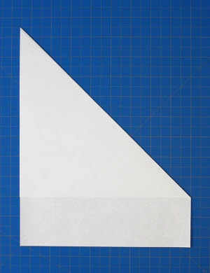
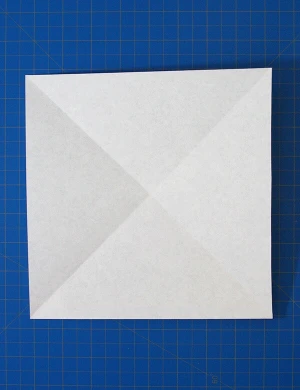
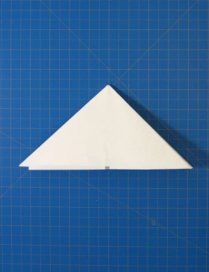
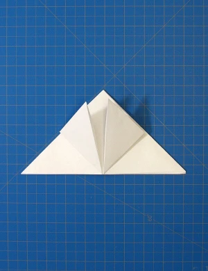
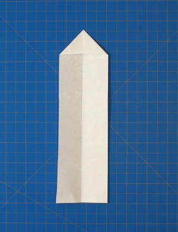
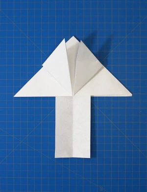

1Step 1
Crease diagonally as shown, trim the leftover strip into a square, and keep the offcut for later.

Crease diagonally as shown, trim the leftover strip into a square, and keep the offcut for later.

Fold the left corner to the opposite corner and open it to leave an X crease.

Next accordion-tuck the sides in to form a triangle.

Bring both bottom corners up to the top point.

Take the earlier offcut and fold its top corners into the centre to make an arrow.

Slide the arrow fully into the plane's body.
With a calm day and a level throw, expect only a short distance, since this design is not built for range. Wind, paper weight, and small crease errors all change the result.
A well-trimmed Tailed Plane should hold a very brief flight; the design is not aimed at hang time. Launching from a higher spot and keeping the wings level will extend it.
It is best for long floating glides. Folding skill is intermediate. Use Letter & A4, 6 steps, needs a cut.
Launch gently at a slight upward angle, ideally from a high spot, and let it settle into a glide instead of throwing it hard.